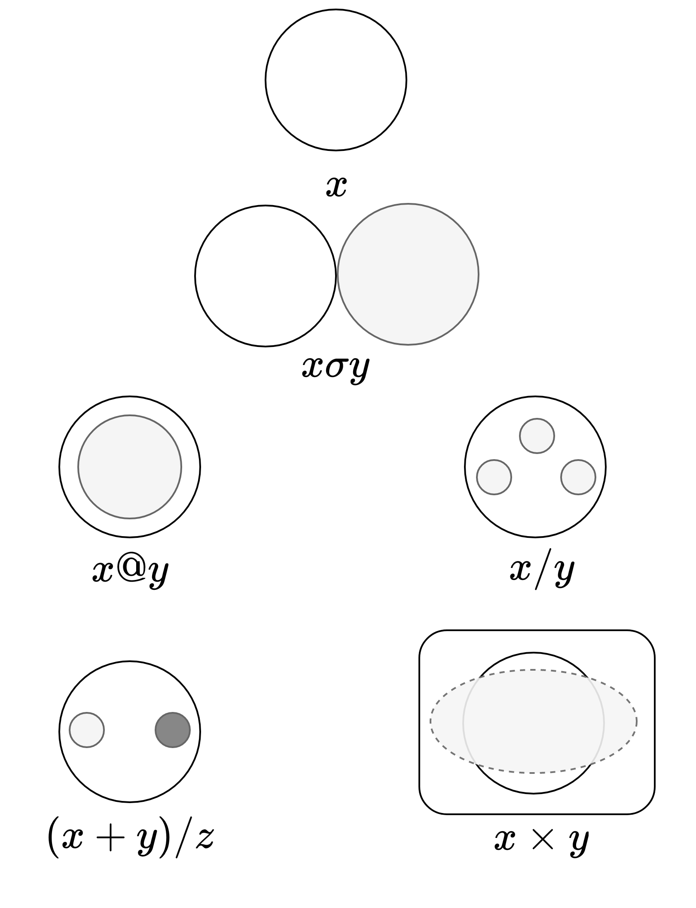

Parts & Relations
There are no slides associated with this set of notes, which themselves contain a variety of interactive elements.
A basic definition of structure:
A set of parts and their relations
Food structure is an important area of food science. When food scientists refer to “food structure” they often mean the microstructure of food. Microstructure is what is observed under a (light) microscope. A particle of 1 µm is 1000 times smaller than 1 mm. Many bacteria are approximately 1 µm in size.
To progress through the animation click on the image or swipe left.
Microstructural features are often used to explain events occurring over short time-scales (minutes, days, weeks) that have practical consequences. Here are some examples:
Events
- Emulsions become unstable due to the flotation of microscopic droplets
- Foams become unstable due to drainage of water through microscopic channels between bubbles
- Gels generate pools of surface water due to the contraction of gelled regions
As the microscopic events described above proceed they can eventually manifest as macroscopic phenomena.
This transition from micro to macro usually corresponds to effects becoming perceptible (they can be tasted or seen).
In the food industry it might mean that a consumer has a negative or positive experience (depending on the phenomenon).
More generally, food structure can be taken to refer to how different parts interact to generate new properties:
Properties
- The viscosity of a liquid depends on the interaction of polymers with solvent
- Liquids transform into gels when the distance between particles is reduced below a critical level
- Bacteria is are less capable of growing in water that is bound to food molecules
Structure → Function
Many of the properties described above can be considered functional. More specifically, they can be considered “techno-functional”, in that they relate to some technical problem (e.g., thickening, gelling, preserving). Techno-functional properties are often distinguished from bio-functional ones, which are those that relate to the function a food or ingredient has in the human body.
Increasingly, food structure is often studied in relation to human digestion (biofunctionality). This is often referred to as the “food matrix effect”. For example, if we are interested in the digestion of amino acids or glucose molecules it is often valuable to consider the specific matrix (i.e., structure) those components are located within.
- Casein digests more slowly than whey proteins because it forms a gel in the stomach — this is why sports nutrition products are marketed as being either “slow release” or “fast release”
- Cooked starch digests more quickly because the sugars are more accessible to digestive enzymes — this effect can also be leveraged to control the rate of digestion
Consider the table below. Imagine you are asked which of the foods you expect to be most “water-like”. Intuitively, you might expect that the system that contains the most water would be most like water. However, this neglects to consider how that water might be structured (is it free or bound? is it liquid or solid?). For most it is surprising that milk has less water than a tomato, but this is not paradoxical if we have an appreciation for how water is structured differently in different foods.
| Food | Water | Protein | Lipids | Carbohydrates |
|---|---|---|---|---|
| 87.6 | 3.2 | 3.9 | 4.8 | |
| 93.1 | 0.7 | 0.3 | 3.1 | |
| 72.5 | 1.9 | 19.5 | 1.9 |
Water is often removed from foods in processes like evaporation and drying. It is known that such processes decrease microbial growth and therefore increase shelf-life.
Water content, however, is not the best predictor of shelf-life. Instead, food scientists use the concept of water activity.
Water activity can be considered as an estimate of the ratio of bound water to free water. The more bound water the lower the water activity. Water activity can be considered a structural property, in that it relates to how food molecules and water molecules interact.
More correctly, water activity is the ratio of the vapor pressure of a food divided by the vapor pressure of pure water. \(H_2O\) in pure water is not bound by other molecules and therefore tends to evaporate easily, generating vapor molecules that exert pressure. In food systems, the water is more tightly bound, reducing the number of vapor molecules that are generated and therefore creating less vapor pressure.
Food scientists use instruments that measure water activity based on these principles, and reducing water activity is a frequent target of food processes.
“All Foods are dispersed systems”
Diagrams and animations can be very helpful when learning about food structures. However, they are also difficult to reproduce and remember.
A simple shorthand — similar to algebra — has been developed to solve this problem. Note that it does not do many things we might expect from a mathematical equation we learn in school. For example, the formulas cannot be solved to yield a number.
The shorthand — called the Dispersed System Formalism — uses four letters that represent physical phases common in food systems: \(G\) for gas, \(O\) for oil, \(S\) for solid and \(G\) for gas. A symbol placed between two letters represents a structural relationship between those phases. The most common symbol is \(/\) for dispersed_in.
| Phase | Gas | Oil | Solid | Water |
|---|---|---|---|---|
| Gas | G/G | O/G | S/G | W/G |
| Oil | G/O | O/O | S/O | W/O |
| Solid | G/S | O/S | S/S | W/S |
| Water | G/W | O/W | S/W | W/W |
Each pair of letters in this table represents a possible structure. We can rewrite the table to represent the structures in plain english. Many food systems can be represented by the structures in this table. For example, yoghurt is a gel. Milk is an oil-in-water emulsion. Whey Protein Concentrate is a powder. Some of these may not be of interest to a food scientist; for example: a gas dispersed in a gas.
| Phase | Gas | Oil | Solid | Water |
|---|---|---|---|---|
| Gas | Gas | Oil aerosol | Solid aerosol (or powder) | Water aerosol |
| Oil | Liquid oil foam | Oil-in-oil emulsion | Solid-in-oil suspension | Water-in-oil emulsion |
| Solid | Solid foam | Oleogel | Solid-in-solid suspension | Gel |
| Water | Liquid water foam | Oil-in-water emulsion | Solid-in-water suspension | Water |
By “structure” here we mean the topological structure of the food. This means that it is primarily based on the notion of connection (how are the phases connected to each other?). For example, this is how we might think of a dispersion of oil in water:
- There are two unique components
- The oil is divided into multiple parts that do not connect
- Any point at the surface of a droplet of oil is connected with water
- Not every surface point of the water is connected with oil (example: the surface of the water)
- The oil is therefore discrete (not self-connected) and the water continuous (self-connected)
This complex logic is encoded in the simple formula \(O/W\).
These are both topics in pure mathematics but for our purposes we only need an intuitive understanding of the difference.
You remember from school that geometry involves the study of shapes like triangles and circles, which are assembled from points and lines. In geometry properties like length and direction are important, while in topology these are ignored.
Topology is only concerned with connection and the classic joke about topology is that:
To a topologist there is no difference between a donut and a mug
The meaning of the joke is that both consist of a hole that is surrounded by a continuous self-connected region. In topology, as were only interested in connection, we ignore the different shape, size and function of both.
Similarly, when using DSF we are only concerned with the fact that yogurt is a gel, not whether the yogurt is in a bowl or a cup, or whether it is white or purple.
Not all food products can be described using the notion of dispersion. For this reason, DSF includes a range of symbols that describe relations between phases:
- Superposition (σ): one thing externally touching another (icing on a cake)
- Inclusion (@): one thing inside of another (egg yolk in egg white)
- Disconnection (+): one thing disconnected to another (ice crystals and gas bubbles in icecream)
- Bicontinuous (×): two things that are continuous with each other (strands of gelatine and water in a gelatine-based gel)
These are illustrated using simple diagrams below for imaginary phases (x, y, z):

For example, consider the formula \((x + y)/z\). This would mean “x and y are both disconnected from each other, but both are dispersed in z”. Just like in equations, we can use brackets to group elements. For example, the following does not represent the same structure:
\[x + (y/z)\]
Procedural Generation of Food?
Below you can use a simple app (Disperse) to generate random food structures using this method. If viewing on a small screen it might be easier to open it in a new window. This app is a computer program and because DSF simply involves a finite set of symbols it is relatively easy to write a computer program that generates DSF formulae. As a more general point, it is worth considering the implications of using computers in this way to help us in the design of food products. In Computer-generated Imagery (CGI) used in movies and videogames it is common to use an approach called procedural generation. This means that instead of manually building mountains when we need to create a world, we simply define a set of rules that can be followed to build the structure (i.e., a mountain-building algorithm). DSF seems to create similar possibilities for food.
Below is another app (WriteHeight) that leverages digital technology to generate geometrical structures. The algorithm behind the app takes a black and white image then renders black regions as low and white regions as high. Gray colours create regions with heights somewhere in between these extremes. This technique is called “height-mapping”. The models can be downloaded and 3D-printed (the 3D printing part is not straightforward, but I am working on it).
Complex Structures
The structure of different foods is often responsible for their unique properties. When these foods have to be “replaced” or “mimicked” one of the major challenges is recreating the structure. Some examples are briefly described below.
Milk
\[(O+S)/W\]
An emulsion of oil in water and a suspension of casein particles in water. Often milk is simple described as an emulsion (\(O/W\)), especially when this is the most immediately important feature (for example: when studying creaming of fat). Further complications arise when we consider that some of the fat in milk is solid and some of it liquid, with solid fat crystals dispersed in liquid fat (\((S/O+S)/W\)). By reasoning towards a more precisely-defined formula we can develop a better understanding of the system.
Ice-cream
\[(G+O+S)/W\]
A dispersion of gas bubbles, oil droplets and ice crystals in supercooled water. Ice-cream is onmost comoplex structures in food.
Meat
\[D_1S/D_1S^3\]
Repeating bundles of one-dimensional (\(D_1\)) solid fibres, each dispersed in the other, the structure repeating approximately three times.
To progress through the animation click on the image or swipe left.
🥩 Click here for full-screen version of animation of meat structure
Note, for the meat example the language needs to be expanded. In this case, the idea of dimensions is introduced:
- \(D_0\): zero-dimension (point-like particle)
- \(D_1\): one-dimension (line-like fibre)
- \(D_2\): two-dimension (surface-like sheet)
- \(D_3\): three-dimension (volume-like region)
Each phase in a DSF formula can be given a dimension like this.
In addition, for the meat example the concept of repetition is represented by the superscript \(3\).
For more examples you are encouraged to read many of the excellent papers written by Herve This, the brilliant French scientist who developed DSF and co-founded the discipline of molecular gastronomy. Three articles are included below (the articles are free online) that contain many more examples — please read through them and find examples that interest you.
References
Burke, R., This, H., & Kelly, A. (2016). Molecular Gastronomy, in Reference Module in Food Sciences. Available online.
This, H. (2005). Modelling dishes and exploring culinary ‘precisions’: the two issues of molecular gastronomy. British Journal of Nutrition, 93, Suppl. 1, S139-S146. Available online.
This, H. (2013). Molecular gastronomy is a scientific discipline, and note by note cuisine is the next culinary trend. Flavour, 2, 1. Available online.